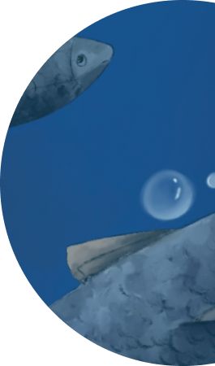
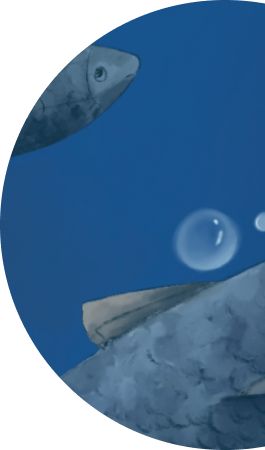

A illustrations about the heart, drowning and the ocean.
The sea was rubbed out bit by bit with a soft edge brush and smudge tool.

A illustrations about the heart, drowning and the ocean.
The sea was rubbed out bit by bit with a soft edge brush and smudge tool.


 


Brush #3
A brush with very soft edges! Great for transitions, overlaying colors, or for laying down large areas at the beginning of a picture.